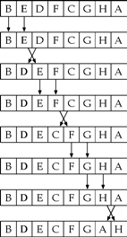
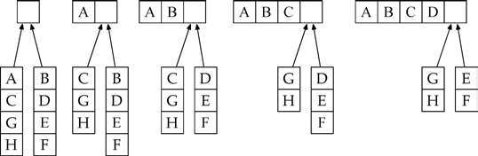
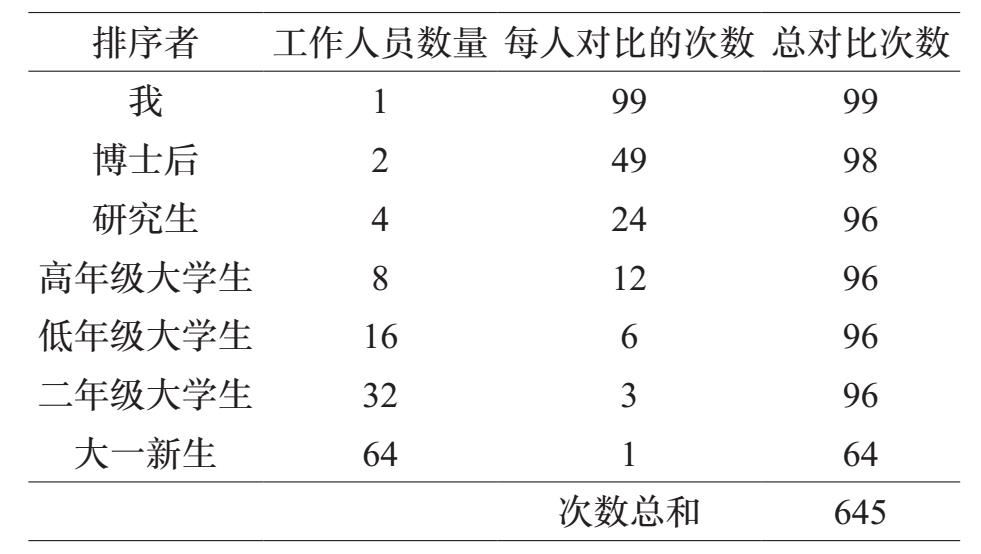
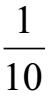
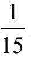
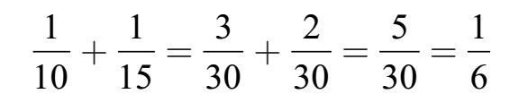
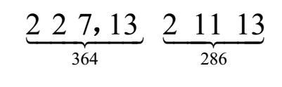
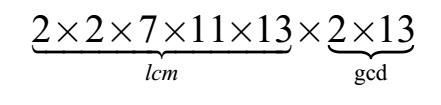
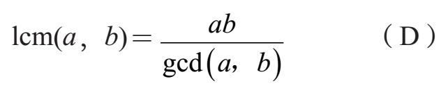

创意厨师一般不会严格遵循食谱。相反，他们利用菜谱激发他们烹饪的灵感。新手厨师更倾向于严格按照步骤行事。
算法一词来源于9世纪一个名叫阿尔-花刺子模（Al–Khwarizmi）的波斯数学家的名字。
同样，具有良好方向感的司机不需要地图或书面指示来找到他们的目的地。其他人则需要详细的路线规划引导。
电脑就像新手一样。当需要对一些数进行求和时，他们遵循一系列精心规定的步骤，按照程序执行每个操作。这些程序被称为算法。计算机算法在我们的生活中无处不在：它们把利息加入我们的银行账户中，确定文本文档中的分页位置，将DVD上的数字数据转换成电影，预测天气，搜索网页上包含给定配料清单的食谱，当我们试图找到一个模糊的地址时，通过GPS设备与我们联系。
大多数人学习的第一个数学算法是加法。求25+18，我们知道先将5和8相加（我们记住的结果是13），写下3，进位为1，依此类推。
算法设计者不仅仅为解决问题提供正确的程序，该方法应该也是有效的。如果一个算法在数学上是正确的，但需要几个世纪才能完成其工作的话，就没有多大用处了。我们来看看例子。
每学期结束时，我都会有一堆期末考试卷要发还给学生。当学生来到我的办公室拿作业时，我不想在乱糟糟的纸堆里翻检查找而找到他们的试卷。相反，我按照学生姓名的字母顺序排列试卷。所以，在我宣布试卷可以取走之前，需要对它们进行排序。
问题是将一些顺序混乱的文件按字母顺序把它们重新排列。怎么做最好？
让我们从一个简单而低效的想法开始吧。假设我班有一百名学生。我从未排序的纸堆取出第一张试卷，看看它是否按字母顺序排列。我如何做到这一点？我将这个卷子与其他的进行比较。很有可能，这张位于未排序的纸堆顶部的试卷并不是按字母顺序排列的第一张，所以我把它放在纸堆的底部，然后再试一次。我一直这样做，直到我确定出按字母顺序排列的纸张。我拿走那张纸，把它放入新的一堆，它们将按字母顺序摆放。
我回到未排序的纸堆上，现在是99张，就像以前一样，按字母顺序查找纸张。我是这样做的，拿起最上面的一张，然后与堆中的所有其他纸张比较，如果不是正确的，就把它放在最后。当我找到最靠前的字母时，将其从未排序的纸堆中取出，并将其放在已排序的纸堆的末尾。
现在未排序的纸堆上只剩下98张纸，我重复这个程序：按字母顺序搜索最靠前的纸张，然后将其移到已排序的纸堆的末端。
这需要多长时间？
最基本的步骤是比较两张卷子，并根据字母顺序决定。我们通过计算分类过程中执行的基本比较的次数来评估分类过程的效率。由于我的班级有100名学生，我需要进行多少次取出2张试卷、阅读名字和进行比较的操作，才能决定哪一个需要首先被拿出去？
这个基本步骤甚至可以分解成更基本的步骤。例如，要决定哪个先拿出，Alice或Alex，我们首先比较第一个字母。这两种情况都是A，所以我们比较第二个字母。又是一个平手（都是l），所以我们继续第三个字母。由于e在i之前，我们得出结论Alex应该排在Alice之前。
在100张无序堆叠的试卷中，我将第一张与其后所有的试卷进行比较：这就是99次比较。我可能不得不这样比完所有100张试卷（我正在寻找的试卷可能是最后一张）。所以要按字母顺序找到第一篇试卷可能需要100×99=9900次比较。
取出试卷并将其放到已排序的纸堆中，我对剩余的99张未分拣试卷重复以上的步骤。我把第一张和其他98张进行比较，看它是否为第一个按字母顺序排列的，我可能必须对未排序的所有试卷进行比较，找到第二张可能需要99×98=9702次的比较。
找到第三张需要98×97，第四张需要97×96，等等。对整个试卷堆进行排序需要数量巨大次数的比较
100×99+99×98+98×97+···+2×1=333,300
我们已经进行了最复杂的情况分析。对于每一种计算，我们做最复杂的推测，并计算我们必须做多少次比较。尽管最复杂的情况分析无疑过于悲观，但它确实让我们知道这种方法的效率低下。让我们试试另一种。
最复杂情况分析的替代方法是平均情况分析，在这种分析中，我们计算一个典型情况下的比较次数。
我们从混乱的100张卷子开始。我们首先看看前两张。如果它们的顺序错误，我们交换它们的位置（第一变成第二，第二变成第一）。如果它们顺序正确，我们就不对它们进行操作。现在我们看看第二张和第三张。如果它们顺序正确，就不对它们进行操作，但是如果顺序错误，我们将二者位置互换。我们继续比较完所有试卷，全过程需要99次比较。
我们在这里描述的过程被称为冒泡排序法。下图显示了该算法的一个过程。

请注意，A向前面的纸堆只移动了一步。它将需要六轮才能上推到正确的位置。
在这个过程中，字母表靠前的试卷往顶部移动，而在字母表靠后的试卷沉到了底部。但是仅通过比较不足以排好试卷。在最坏的情况下，在字母表最前面的试卷可能会出现在试卷的底部，比较一遍只能将其推进到第99位，这需要99轮比较。
因此，用这种方法进行比较的次数是99×99=9801。这比第一种方法好得多，但仍然复杂。如果我可以在两秒钟内比较两张试卷并且（如果需要的话）对它们进行互换，那么按照字母顺序排列这些试卷需要花费五个多小时。这是无法容忍的。
我们在这里描述的算法被称为归并排序（merge sort）。这是采取分治策略（divide–and–conquer）以解决问题的一个例子：我们承担了一项大任务，把它分解成更小，更易管理的部分，先解决这些子问题，然后把子问题的答案进行合并。
我感到很沮丧，于是离开办公室出去散步。在大厅，我看到两个为我工作的博士后，一个邪恶的笑容浮现在我的嘴边。很快，我跑回办公室，把未分类的一堆试卷分成两半，分给他们每人各五十份。“给你们每个人一堆试卷”，我说，“请把每一堆按字母顺序排列，然后还到我的办公室。”搞定！我高兴地回到办公室。
当我的博士后对试卷进行排序后，我还有一些工作要做。我需要将他们分别整理的试卷合并到一起。那会有多困难？我将把这两摞排列好的试卷放在我的桌子上。我会查看每一摞最上面的试卷，看哪一张更靠近字母表的前面。下图说明了这个合并过程：

当其中一摞用尽后，我只要将另一摞剩下的试卷放在排好的试卷后面。在最复杂的情况下，我只做了99次对比。我可以在几分钟内做到这一点！
但是我的博士后呢？每个人有50张试卷要进行排序。他们都极其聪明，所以他们并没有自己整理，而是把各自的试卷分成两半（所以每个人未排序的试卷变为四摞，每一摞为25张），然后让四个研究生对这些试卷进行排序。当研究生完成工作后，博士后们只需要各自将两摞各25张的试卷合并成一摞。每个博士后最多进行49次对比。
然而四个研究生都不傻。他们每人把试卷分成两摞（每摞有12张和13张卷子），并找到8名高年级本科生，要求他们对小摞的试卷进行分类。研究生仍然需要将本科生返给他们的试卷进行合并，然后再将各自的25张交给博士后。
高年级本科生如何对试卷进行排序呢？你猜对了：他们把各自的试卷又分成一半（每摞6或7张），让低年级本科生进行排序。三年级学生又将每一摞试卷分成两半（每摞3或4张），并交给二年级学生。最后，二年级学生再把试卷分成两半（每个1或2张），并把它们交给一批大一新生。大一新生只能靠自己，他们直接将试卷排序——这并不困难，因为他们的试卷只有1或2张！
很明显，这个“庞氏骗局”节省了我的时间，但总的工作量是多少？让我们来计算一下在这个庞大的项目里的所有的人做了多少次对比。下面的图表说明了所有的工作：

这个方法的总体工作量比我们之前描述的冒泡排序方法要少得多。
不幸的是，这个想法有一个小缺陷：没有任何博士后为我工作！所以，我无法创建一支名副其实的助手军队按照字母顺序排列我的考卷，而是自己去完成这个过程。
我首先找到一张大而空的会议桌。我把100张考卷分成两摞，每摞50张，各自放在桌子的两端。我分别对这两摞进行排序，然后把这两摞合并在一起。我如何进行排序呢？我使用完全相同的算法！我把两摞各自包含50张的试卷分别分成25张，然后合并。25张一摞的试卷按照相同的归并方法进行排序。所做的对比总数与以前相同（645次），只不过现在的所有的工作由我一人完成。尽管如此，这比冒泡排序所需要的近万次对比工作要少得多。
一个单词在字典中的定义不应包括被定义的单词本身。想象一下，在字典中查找贫困这个词时却只能找到这个定义：
贫困：处于贫困状态。
没用的解释！有趣的是，归并排序算法的定义犯有这种自我指认的“罪名”。此处是归并排序的一个更为正式的描述（省略了所有细节）。
归并排序算法
输入：一个列表，各项为a1，a2，…，an
输出：按顺序排列的项
1. 如果n=1，列表已经按照顺序排列，并将其作为输出返回。否则，继续第2步。
2. 将输入列表分成两个（几乎）相同的子列表。使用归并排序方法在对子列表进行排序。
3. 合并子列表以创建输出列表。
如果我们加入对合并步骤工作的解释，就会得到完整的归并排序算法的描述。
根据自身定义的算法被称为递归。与对于贫穷的没有创造性的定义相反，这个定义是可以接受的，因为自我指认的循环最终会结束。得益于第1步，一旦列表足够短，归并排序过程就不会重复进行，不存在“无穷递降”。
能被986和748两个数字整除的数字中，哪一个最大？解决这个问题最简单的方法就是开始尝试可能性。很明显，986和748都可以被1整除。而且很容易看出两者都可以被2整除。它们都不能被3整除。其中一个，748可以被4整除，而另一个则不能。我们所要做的是不断尝试可能的因数，并跟踪结果。当我们达到748时，停止测试除数，因为没有大于748的整数可以成为748的因数。试过所有可能性之后，我们发现986和748仅有的公约数是1、2、17和34。所以986和748的最大公约数（greatest common divisor）是34。对于任何两个正整数a和b，标记gcd（a，b）代表它们的最大公约数。
一些简单的例子可以让你检验自己的理解：
gcd（10，15）=5
gcd（12，16）=4
gcd（13，11）=1
gcd（10，20）=10
gcd（17，17）=17
从上述方法产生了一个简单正确的算法来计算两个正整数的最大公约数。它的弱点是效率低下。要找到两个三位数字的gcd需要尝试数百个可能的因数。有没有更好的办法？
让我们更仔细地观察986和748。既然我们在寻找共同的因数，那么将它们分解为质数似乎是很自然的（参见第1章）。下面是它们的质因数分解：
986=2×17×29和748=2×2×11×17。
在计算gcd（a，b）时，将a和b进行因数分解的效率要高于在整除实验中一直试到a与b的最小值的效率。要找到一个整数a的质因数，最多只需要a次尝试。所以这比第一种方法有了明显的改进，但对于大的（100位）整数仍然不可行。
从这些分解中，我们可以通过“抓取”两个数字共有的所有质数来计算gcd。由于二者都有一个因数2和一个因数17，他们的gcd是2×17=34。
我们如何有效地对数进行分解？不幸的（我们在第一章中提到）是我们不知道。我们需要一个新的想法。
这个新想法来自欧几里得。假设d是986和748的一个公约数。这意味着
986=xd且748=yd
其中x和y是整数。这意味着d是986–748的约数。下面用代数来表示这个说法：
986–748=xd–yd=（x–y）d
由于x和y是整数，所以x–y也是整数。因此，986和748之差也是d的倍数。注意，986–748=238。
同样，任何748和238的公约数都是986的公约数。以下是原因。如果e是748和238的公约数，那么我们得出
748=ue且238=ve
u和v是整数。因此
986=748+238=ue+ve=（u+v）e
从中我们推导出986是e的倍数。
结论：986和748的公约数与748和238的公约数完全相同。为了准确地表示，以下是所有三个数字的约数，加下划线的是它们共享的约数：
986的约数→1，2，17，29，34，58，493，986
748的约数→1，2，4，11，17，22，34，44，68，187，374，748
238的约数→1，2，7，14，17，34，119，238
因为它们的公约数是一样的，我们得出
gcd（986，748）=gcd（748，238） （A）
因此计算gcd（986，748）的问题转换为计算gcd（748，238）。这是进步，因为我们将计算较小的数字。让我们再次尝试相同的技巧。
如果d是748和238的一个公约数，那么它也是它们之差的约数。但是我们可以走得更远。我们可以从748中多次减去238，并做出相同的论断。具体而言，如果d能整除748和238，那么我们说d也是748–3×238的一个约数。下面是支持这个结论的代数表达，写作
748=xd且238=yd
其中x和y是整数。那么
748–3×238=xd–3yd=（x–3y）d
因此d是748–3×238=34的公约数。
相反，如果e是34和238的约数，那么e也是748的约数。下面是代数表达，因为e是238和34的公约数，所以
238=ue且34=ve
u和v是整数。因此
748=3×238+34=3×（ue）+ve=（3u+v）e
所以e是748的约数。因此，三个整数748，238和34具有完全相同的约数，我们可以得出结论：
gcd（748，238）=gcd（238，34） （B）
联立等式（A）和（B）得出
gcd（986，748）=gcd（748，238）=gcd （238，34）
我们差不多完成了。注意238可以被34整除（因为238=34×7），所以gcd（238，34）=34。最后的结果是
gcd（986，748）=gcd（748，238）=gcd （238，34）=34
让我们回顾一下在这个计算中如何得出中间数。我们从986中减去748得到238。我们从748中减去3次238，得到34。为什么我们在第一种情况下减去一次而在第二种情况下减去三次呢？我们希望尽可能地使数字变小，因为计算小数字的gcd比大数字更容易。所以我们希望尽可能多地从较大的数中减去较小的数。注意，986里只有一个748（在除法的意义上），余下238。然而，748里有三个238，余数为34。我们只能用948次减去一次748，但是我们可以用748减去三次238。
例如，如果a=1 00，b=40，那么商q=2，余数c=20。那么得到100–2×40=20。
我们准备将这个例子的思想汇集成一个计算两个正整数的最大公约数的算法。给出两个正整数a和b，我们要计算它们的最大公约数gcd（a，b）。我们将尽可能减去b的倍数。为了弄清楚减去多少次，我们用a除以b得到商q和余数c。代数上，我们有
a - qb=c
如果b碰巧是a的除数，那么这个除法是整除，余数c是零。否则，c是正数，但小于b（如果c大于b，我们可以再减去一个b）。
现在假设d是a和b的一个公约数。意即
a=xd且b=yd
其中x和y是整数。因此
c=a–qb=xd–q（yd）=（x–qy）d
所以c也是d的倍数（因为x–qy是一个整数）。
另一方面，如果e是b和c的公约数，那么得出
b=ue且c=ve
u和v是整数。因此
a=c+qb=ve+q（ue）=（v+qu）e
所以e是a的一个除数。
我们已经证明，a和b的公约数与b和c的公约数完全相同。因此，
gcd（a，b）=gcd（b，c）（C）
让我们看看等式（C）如何使我们有效地计算两个大整数的最大公约数：a=10693和b=2220。
我们用a除以b，发现10693有4个2220，余数c=1813。
10693=4×2220+1813
因此
gcd（10693，2220）=gcd（2220，1813）
2220=1×1813+407。
现在我们“重新开始”并设a'=2220且b'=1813。将a'除以b'可以看出2220只有一个1813，余数c'=407。因此，依据等式（C）
gcd（10693，2220） =gcd（2220，1813）
=gcd（1813，407）
1813=4×407+185。
重新开始，这次设a''=1813且b''= 407，我们发现1813里有四个407，余数为185。再次，依据等式（C）：
gcd（10693，2220） =gcd（2220，1813）
=gcd（1813，407）
=gcd（407，185）
设a'''=407且b'''=185。相除，我们看到，407里有两个185，余数c'''=37。
407=2×185+37。
gcd（10693，2220） =gcd（2220，1813）
=gcd（1813，407）
=gcd（407，185）
=gcd（185，37）
我们离结果越来越近！设a''''=185且b''''=37，相除——185里正好有五个37。因此gcd（185，37）=37。我们完成了计算：
185=5×37+0。
gcd(10693，2220) =gcd(2220，1813)
=gcd(1813，407)
=gcd(407，185)
=gcd(185，37)=37
我们找到了10693和2220的最大公约数，只用了五次除法！欧几里得的最大公约数算法可以总结如下：
在第6章中我们介绍了整数互素的概念。它可以这样描述：假设gcd（a，b）=1那么a和b互素。由于欧几里得算法可以高效地计算两个数字的gcd，它提供了一个有效的方法来查看两个数字是否互素。
欧几里得的GCD算法
输入：两个正整数a和b
输出：gcd（a，b）
1. a除以b得到商q和余数c。
2. 如果c=0，则返回b；c是a和b的最大公约数。
3. 否则，计算gcd（b，c）并返回该值。
检验你对欧几里得算法的理解，找出1309和1105的最大公约数。你可以使用计算器。答案见[1]。
最大公约数概念与最小公倍数（least common multiple）概念密切相关。假设有两个正整数，比如10和15，它们的最小公倍数是同时满足是二者倍数的最小正整数；在这种情况下，答案是30。a和b的最小公倍数标记为lcm（a，b）。最小公倍数概念可以用于分数的相加例如。，

和
相加，首先要使用一个公分母来重写这些分数。这个公分母可能是任何10和15倍数的数字，其中最简单的是它们的最小公倍数。因为lcm（10，15）1 1 =30，我们可以用分母30重新表示，然后做加法：
找到小数字的最小公倍数不是太具有挑战性，但是我们如何计算大数字的最小公倍数？例如，364和286的最小公倍数是几？
这种方法效率低下，但并不是无望的。我们知道364×286的积是这两个数字的倍数。我们只是希望能碰巧发现一个较小的公倍数。
一种方法是写出这两个数字的倍数，并找到一个匹配：
364的倍数→364，728，1092，1456，1820，2184，…
286的倍数→286，572，858，1144，1430，1716，2002，…
如果我们把这些列表扩展得足够长，会发现4004是它们共同拥有的第一个数字，所以lcm（364，286）=4004。
下面是另外一个想法。将364和286因数分解为质数：
364=2×2×7×13和286=2×11×13
364的倍数必定包括质数因数2×2×7×13，且286的倍数必须包括质数因数2×11×13。因此，在建立这些数字的公倍数时我们必须有以下几个因数：两个2，一个7，一个11和一个13（我们不需要两个13）。
2×2×7×11×13=4004
而实际上，4004是364和286的最小公倍数。
这似乎是一个很棒的方法，正如我们在本章前面和第一章中所解释的那样，没有一种已知的有效方法来分解大整数。
虽然因数分解并没有给出一个计算两个数字的最小公倍数的高效算法，但它确实带给我们一个重要的见解。我们来比较一下gcd和lcm的分解方法。
这两个数字的七个质数因数是：

我们通过收集这些列表中的共有质数因数来形成364和286的gcd。有两个：2和13。
要创建364和286的公倍数，我们需要合并出现在两个列表中的所有质数。但是，我们不需要两个13（一个就足够了），我们不需要三个2（两个就足够了）。换句话说，我们通过把一个列表中所有的质数和另一个列表中的所有质数合并，但要将“冗余”的质数（两个列表中共有的质数）去掉就能创建lcm。这些质数有五个：2，2，7，11，13。
检验：
gcd（364,286）=26=2×13，
且 lcm（364,286）=4004=2×2×7×11×13注意，我们用于lcm的质数包括两个数字的所有质数因数，除了用于gcd的那两个：

换句话说，我们得出
364×286 =（2×2×7×13）×（2×11×13）
=（2×2×7×11×13）×（2×13）
=lcm（364，286）×gcd（364，286）
这个例子没有什么特别之处。对于任何两个正整数a和b，我们有
a×b=lcm（a，b）×gcd（a，b）
我们可以重新排列这个公式

由于欧几里得的算法给出了一个有效的方法来计算两个整数的最大公约数，所以它也给出——得益于等式（D）——找到它们的最小公倍数的有效方法。
[1]解决gcd问题的答案。使用欧几里得算法：
1309=1×1105+204
1105=5×204+85
204=2×85+34
85=2×34+17
34=2×17+0
因此：
gcd（1309，1105） =gcd（1105，204）=gcd（204，85）
=gcd（85，34）=gcd（34，17）=17。